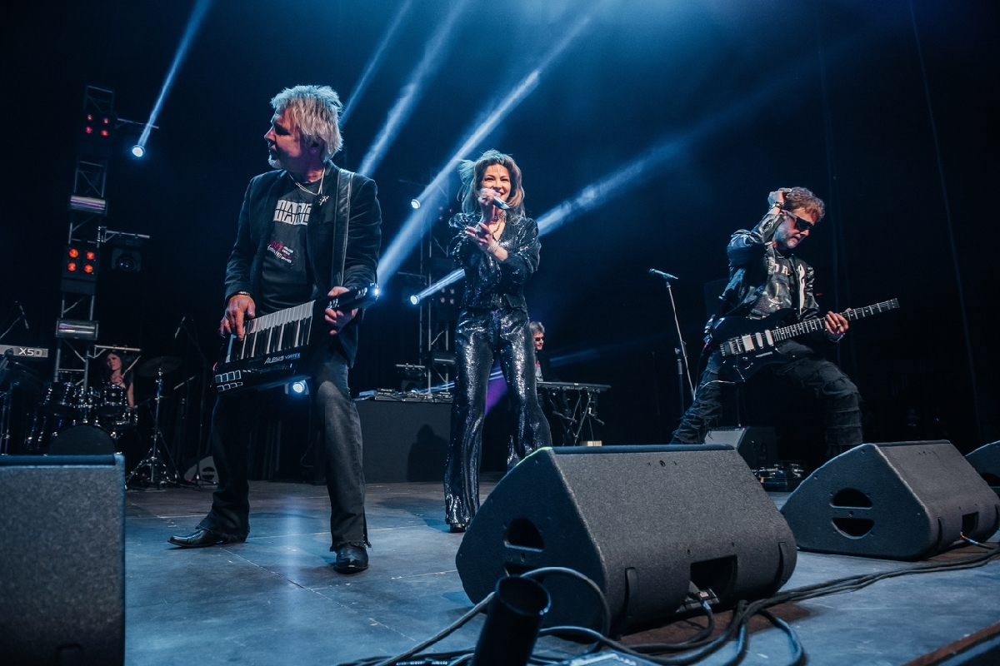
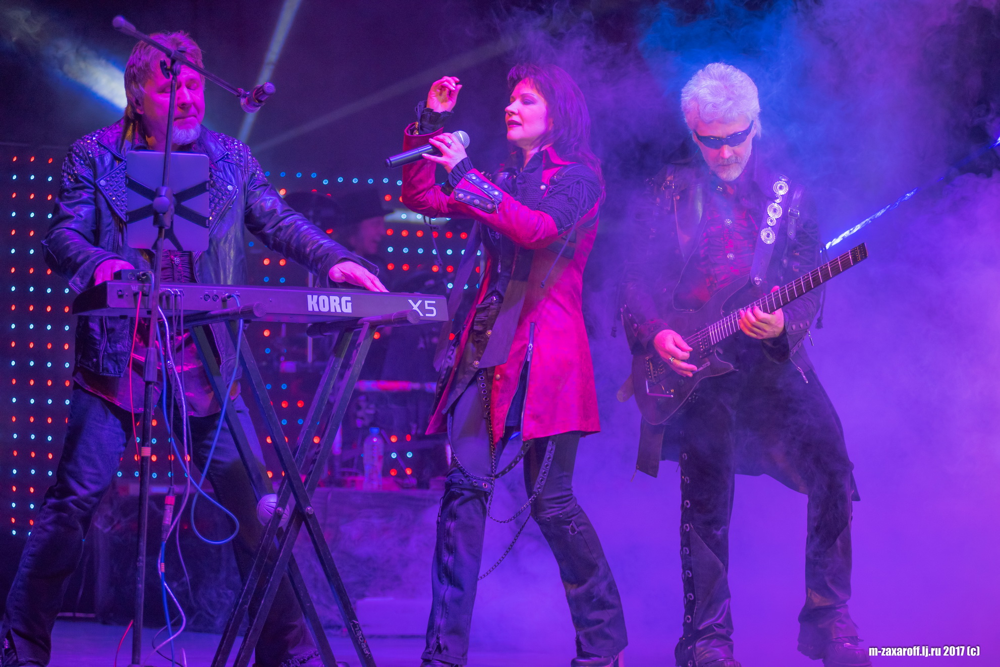
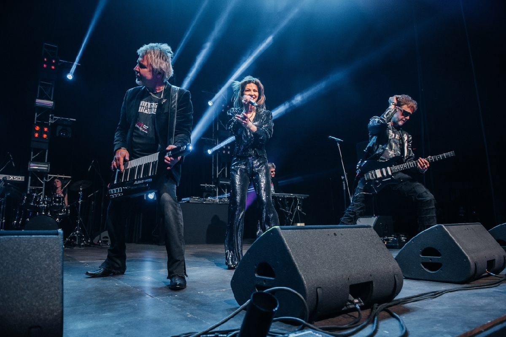
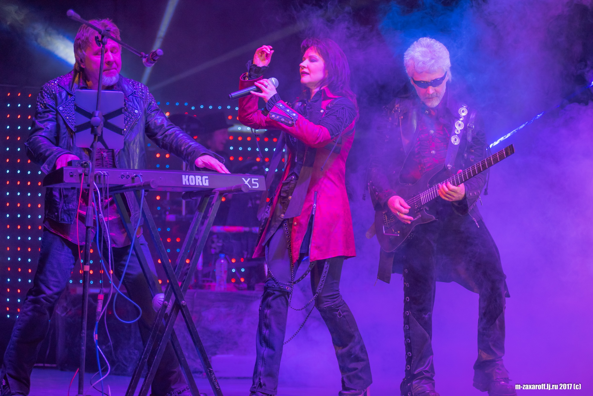

История группы Мираж
Группа Мираж начала своё существование в 1986 году и быстро завоевала популярность среди слушателей благодаря хитам, которые стали классикой.
Музыкальные альбомы и выступления группы пользовались огромным успехом.
Группа Мираж начала своё существование в 1986 году и быстро завоевала популярность среди слушателей благодаря хитам, которые стали классикой.
Музыкальные альбомы и выступления группы пользовались огромным успехом.
